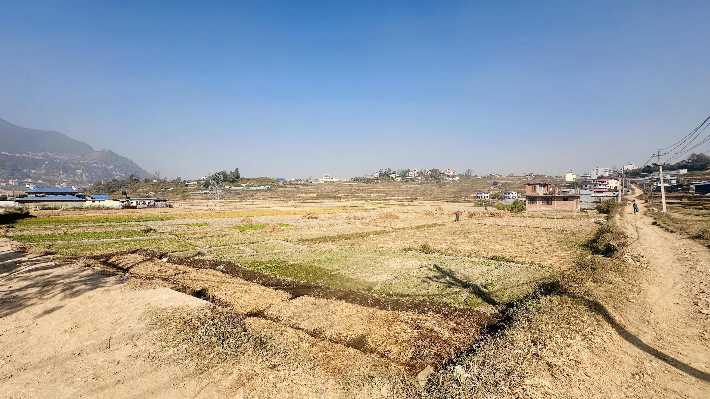

The SDG Foundation is committed to supporting Nepal's progress toward
achieving the United Nations' Sustainable Development Goals (SDGs). We
focus on empowering communities and fostering lasting change by
addressing key issues such as poverty, education, inequality, and
environmental sustainability. Our initiatives are grounded in local
needs, working alongside Nepali individuals, organizations, government
bodies, NGOs, INGOs, and other partners to create sustainable solutions
for a more equitable and resilient future.
𝐒𝐃𝐆 ğğ¥ğ¨ğ ğ¬
Nepal’s Hidden Heritage
15 Tentative World Heritage Sites That Deserve More Attention When
people think of Nepal’s heritage, they mostly
Kirtipur - Hidden Gem Waiting for Its Spotlight
Alright, let’s talk about Kirtipur. It’s this stunning little town
perched on a hilltop just southwest of Kathmandu, full of history,
culture, and charm. But

Khokana – Where Dashain Isn’t Celebrated!
Tucked away just south of Kathmandu, Khokana is one of Nepal’s most
unique and historically rich villages. But here’s the twist—while the
rest of th
You got questions?
The SDG Foundation is committed to uncovering hidden heritage and showcasing the rich potential of our national heritage through various programs and initiatives. Below, we've answered some of the most common questions you might have.
FAQs
How does the SDG Foundation work?
Are there any additional fees?
How can I get involved with the SDG Foundation?
What types of heritage projects does SDG focus on?